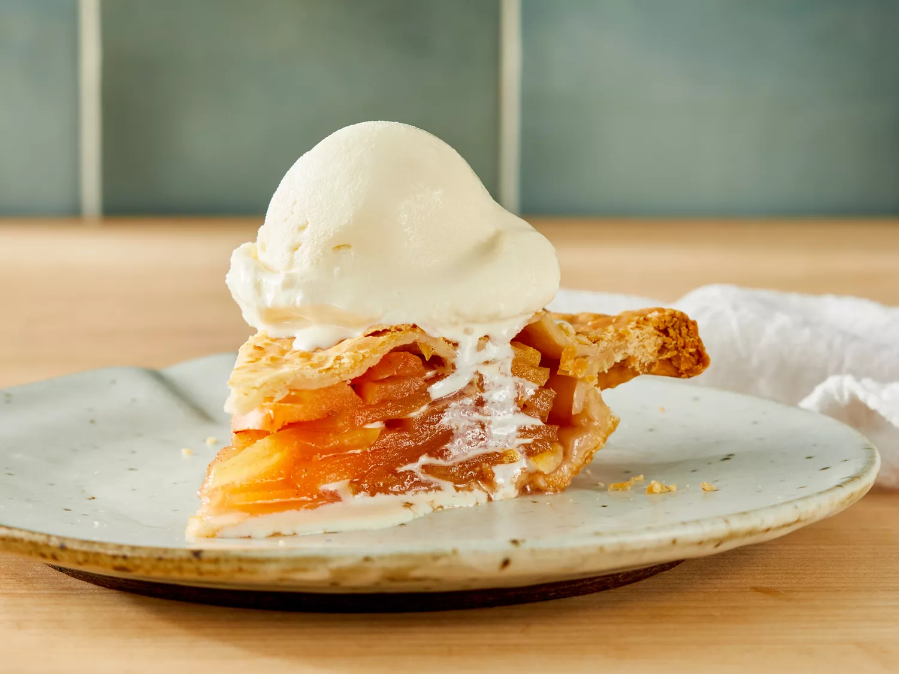

Apple Pie Recipe

Ingredients
- 1 (14.1 ounce) package pastry for a 9-inch double-crust pie
- 3/4 cup white sugar, or more to taste
- 1 teaspoon ground cinnamon
- 6 cups thinly sliced apples
- 1 tablespoon butter
Directions
- Gather the ingredients. Preheat the oven to 450 degrees F (230 degrees C).
- Line a 9-inch pie dish with one pastry crust; set second one aside.
- Combine 3/4 bup sugar and cinnamon in a small bowl. Add more sugar if that apples are tart.
- Layer apple slicked in the prepared pie dish, sprinkling each layer with cinnamon-sugar mixture.
- Dot top layer with small pieces of butter. Cover with top crust.
- Bake pie on the lowest rack of the preheated oven for 10 minutes. Reduce oven temperature to 350 degrees F (175 degrees C) and continue baking until golden brown and filling bubbles, 30 to 35 minutes more.
- Server warm or cold.